Making True RDF Diagrams with rdfpuml
Table of Contents
- 1. Motivation
- 2. Diagram Control
- 3. Application Examples
- 3.1. Getty CONA: Contributors and Sources
- 3.2. EHRI: Person Record
- 3.3. EHRI: Person Network
- 3.4. Multisensor: Video Annotation & Text Annotation (NIF)
- 3.5. Multisensor: FrameNet Embedded in NIF
- 3.6. Duraspace PCDM Metadata
- 3.7. Video Annotation: LinkedTV NISV Use Case
- 3.8. Video Annotation: Generated Diagram
- 3.9. Offshore Leaks
- 3.10. Offshore Leaks (2)
- 3.11. Offshore Leaks Evolution
- 4. Next Steps
1 Motivation
RDF is a graph data model, so:
- Often the best way to understand RDF data schemas (ontologies, application profiles, RDF shapes) is with a diagram
- Many visualizations exist but they focus on big graphs and are hard to understand
Developed a tool rdfpuml that makes true diagrams from Turtle examples
- Guarantees consistency between said (triple statements) and shown (diagram)
- Lets you focus on domain modeling rather than diagram layouting
- Saves you effort
1.1 Simple Example: Source Turtle
cona:456-thing crm:P12i_was_present_at cona:456-discovery-123. cona:456-discovery-123 a crmx:Discovery; crm:P2_has_type <cona/production/discovery>; crm:P4_has_time-span cona:456-discovery-123-date. cona:456-discovery-123-date a crm:E52_Time-Span; crm:P82a_begin_of_the_begin "1800"^^xsd:gYear; crm:P82b_end_of_the_end "1850"^^xsd:gYear. ######################################## <cona/production/discovery> a puml:Inline.
Namespace puml: are diagram control triples, explained further

1.2 Simple Example: Generated PlantUML
Takes care of many hairy details, eg node name sanitization, property name & value collection, inlining, Association nodes, replacing () with [] (puml quirk), etc
@startuml hide empty methods hide empty attributes hide circle skinparam classAttributeIconSize 0 class cona_456_discovery_123 as "cona:456-discovery-123" cona_456_discovery_123 : a crmx:Discovery class cona_456_discovery_123_date as "cona:456-discovery-123-date" cona_456_discovery_123 --> cona_456_discovery_123_date : crm:P4_has_time-span cona_456_discovery_123 : crm:P2_has_type cona:production/discovery cona_456_discovery_123_date : a crm:E52_Time-Span cona_456_discovery_123_date : crm:P82a_begin_of_the_begin "1800"^^xsd:gYear cona_456_discovery_123_date : crm:P82b_end_of_the_end "1850"^^xsd:gYear class cona_456_thing as "cona:456-thing" cona_456_thing --> cona_456_discovery_123 : crm:P12i_was_present_at @enduml
2 Diagram Control
Diagram readability is a prime concern. Some measures:
- Shorten URLs aggressively. Some prefixed names you see in the diagram are not valid Turtle
- Sort properties by name (rdf:type comes first)
- Collect property values together; collect "parallel" properties together
- Introduce a few diagram control mechanisms
- Follow Dan Connolly's approach Circles and arrows diagrams using stylesheet rules (W3C 2005)
- Use triples in namespace
puml:, usually written after####
2.1 Inlining
Show object inlined in the subject node, not as separate node
- Types and literals are inlined automatically
Inline resource: used often for lookup values
<cona/event/competition> a puml:Inline. # Show URL in the subject node. cona_contrib:10000000 a puml:Inline; rdfs:label "VP". # Show the URL, and add a comment "# VP"
Inline property: show all objects of a property inlined
fn:annotationSetFrame a puml:InlineProperty. # Show all objects (values) of fn:annotationSetFrame inline
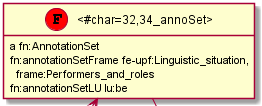
2.2 Collect Values, Comment Label
- Multiple objects are collected and shown separated with commas
rdfs:labelofpuml:Inlineis used as comment after the valuecona_source:2000015171 a puml:Inline; rdfs:label "Fletcher, History of Architecture [1975]". cona_source:2000052135 a puml:Inline; rdfs:label "Great Buildings Online [1997-]".
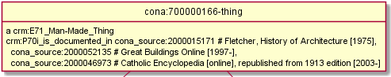
puml:labeladds a comment on non-Inlined nodeia:1000042 a skos:Concept; puml:label "Hercules"; dct:type <ia/type/Religion_Mythology_Legend>; ... ia:129 puml:label "Story of Hercules". tgn:7010720 puml:label "Argos". tgn:7029383 puml:label "Thebes".

2.3 Collect Arrow Labels
- Multiple property instances between nodes are collected in one arrow and shown as several labels
- Inverse arrows work fine
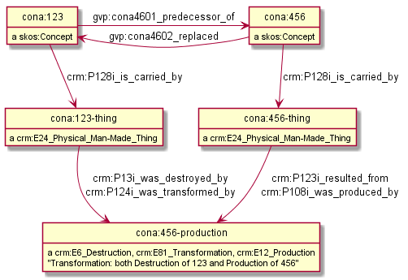
2.4 Arrow Customization
Customize arrows using predicate of the form puml:$dir-$head-$line
$dir: left, right, up, down (default)$head: none="", tri="|>", star="*", o="o" (default is normal arrow)- See PlantUML Object diagrams. Unfortunately PlantUML doesn't have bidirectional arrows
$line: dashed (default is solid)- (each part is optional)
Set arrow for all property instances:
nif:oliaLink puml:arrow puml:up.
Set arrow between two specific nodes:
cona:456-production puml:left cona:456-motivation-123.

2.5 Stereotypes and Colored Circles
Stereotype is UML lingo for those funny «guillemetted names» and colored circles (either is optional)
iso:ThesaurusArray puml:stereotype "(A,red)". gvp:GuideTerm puml:stereotype "(G,green)". gvp:Concept puml:stereotype "(C,lightblue)".
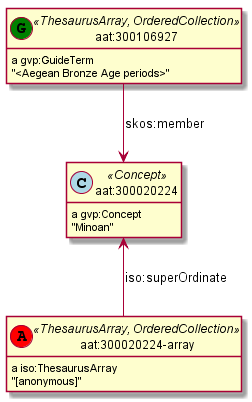
You can also use this on an individual node instead of a whole class.
2.6 Reification
- A statement
<s> <p> <o>is also represented as a node with 3 addressing properties, and extra data is added
<node> a <ReificationClass>; <subjectProp> <s>; <shortcutProp> <p>; <objectProp> <o>; # extra data, eg dct:created, dct:creator
- RDF Reification is used most often (first row below)
- CIDOC CRM also has it (with extension
crmx:propertyakabmo:PX_property) - Property Reification Vocabulary allows us to express this data formally:
| ReificationClass | subjectProp | shortcutProp | objectProp | prop (shortcut) |
|---|---|---|---|---|
| rdf:Statement | rdf:subject | rdf:predicate | rdf:object | any prop |
| crm:E13_Attribute _Assignment | crm:P140_assigned _attribute_to | crmx:property | crm:P141_assigned | any CRM prop |
| crm:E14_Condition _Assessment | crm:P34_concerned | crmx:property | crm:P35_has_identified | crm:P44_has_condition |
| crm:E15_Identifier _Assignment | crm:P140_assigned _attribute_to | crmx:property | crm:P37_assigned, crm:P38_deassigned | crm:P1_is_identified_by, crm:P102_has_title |
| crm:E16_Measurement | crm:P39_measured | crmx:property | crm:P40_observed _dimension | crm:P43_has_dimension |
| crm:E17_Type _Assignment | crm:P41_classified | crmx:property | crm:P42_assigned | crm:P2_has_type or subprop |
2.7 Reification Nodes
- Automatically discover reifications as per the previous table and make PlantUML Association Class
- Show addressing properties with arrows (← : →) pointing to the subject, shortcut, object
- Limit: no more than 2 reifications per relation (and the second one is ugly). So use
puml:noReifyto avoid making reification
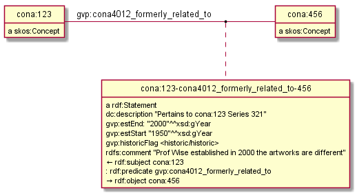
3 Application Examples
- Getty CONA: Mappings of museum data to CIDOC CRM
- EHRI: Holocaust Research into Jewish social networks
- Multisensor: NLP2RDF/NIF, FrameNet
- Duraspace: Portland Common Data Model for metadata in institutional repositories
- Video Annotation: LinkedTV NISV Use Case
3.1 Getty CONA: Contributors and Sources
Aggressive URL shortening, collecting multiple values, value comments

3.1.1 CONA Iconographic Authority
Arrow direction, reification
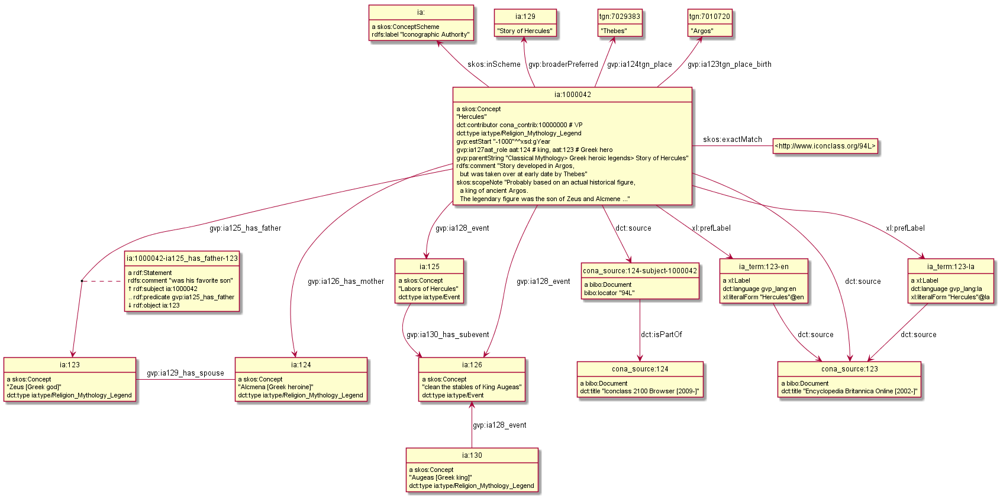
3.2 EHRI: Person Record
Simple record about a person, including info about related people
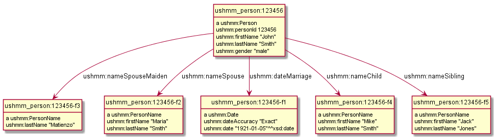
3.3 EHRI: Person Network
Reconstructing the social network of a person, representing in CIDOC CRM and AgRelOn
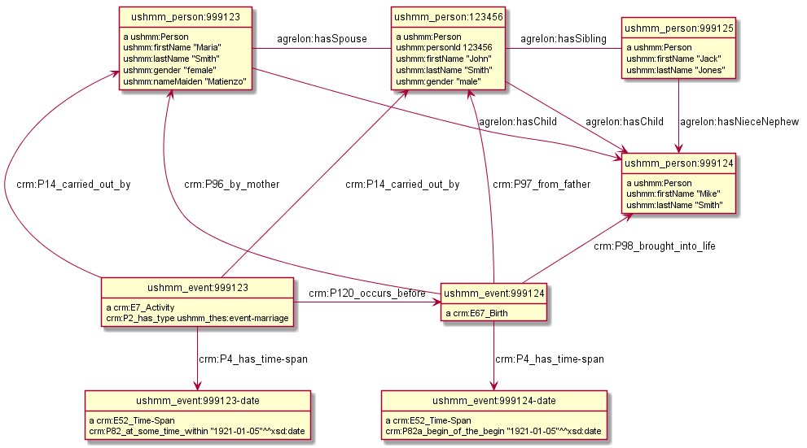
3.4 Multisensor: Video Annotation & Text Annotation (NIF)

3.4.1 Multisensor: Social Network Analysis
Global influence and reachability

3.4.2 Multisensor: Image Annotation with OpenAnnotation
Reification is used to express Confidence

3.4.3 Multisensor: Image Annotation with OpenAnnotation+FISE
FISE (Stanbol) is used to express Confidence

3.5 Multisensor: FrameNet Embedded in NIF
Made with PlantUML "by hand", not rdfpuml. Uses PlantUML Packages

3.5.1 Multisensor: FrameNet Manual Example
Diagram made by hand, took a lot of time, stylized

3.5.2 Multisensor: FrameNet Automatic Example (Part 1)
Made automatically with rdfpuml. Split on 2 pages…
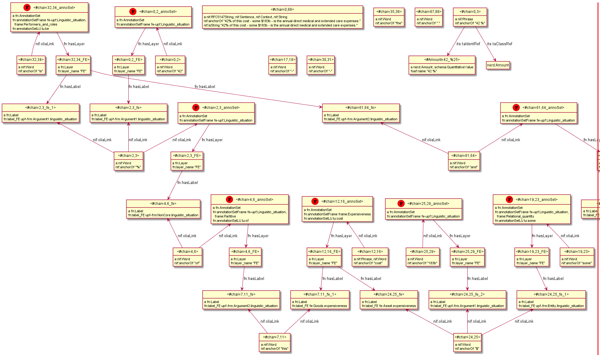
3.5.3 Multisensor: FrameNet Automatic Example (Part 2)
Split on 2 pages… part2

3.6 Duraspace PCDM Metadata
- Portland Common Data Model for metadata in institutional repositories (Fedora, Islandora, etc)
- Reference Diagrams for Comment lists a bunch of metadata layouts for different kinds of Works/Files
- These are made by hand, which takes a lot of time. Eg see diagram for a Postcard (simple kind of Work)
- Proposed making diagrams with rdfpuml (interest tracked as duraspace/pcdm#46):

3.7 Video Annotation: LinkedTV NISV Use Case

3.8 Video Annotation: Generated Diagram

3.9 Offshore Leaks
Ontotext published as RDF the ICIJ Offshore Leaks database according to this model:
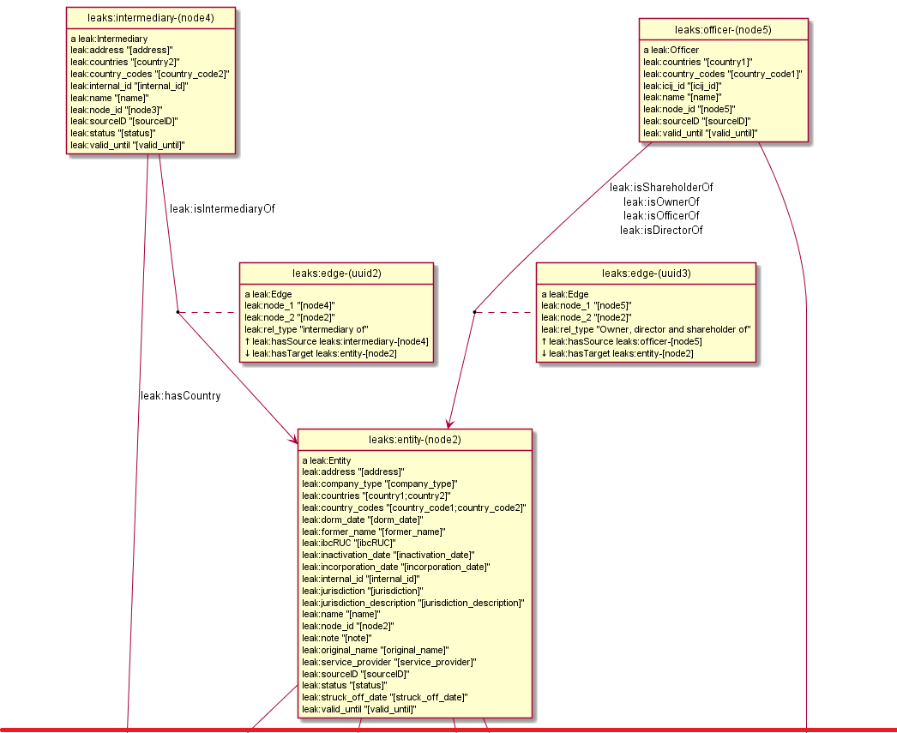
3.10 Offshore Leaks (2)
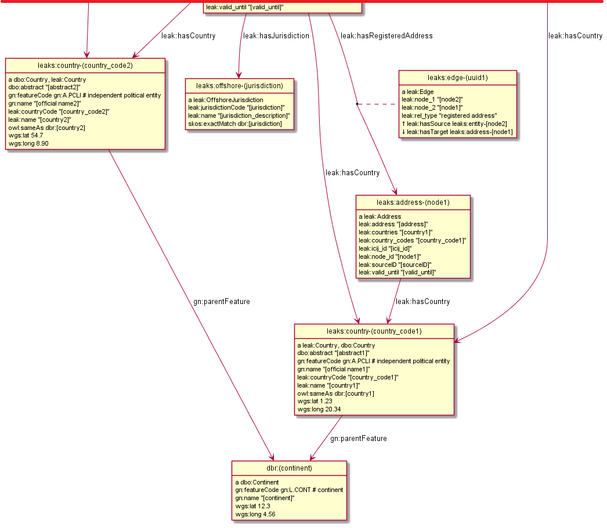
3.11 Offshore Leaks Evolution
The model will be evolving as we unravel more of the data
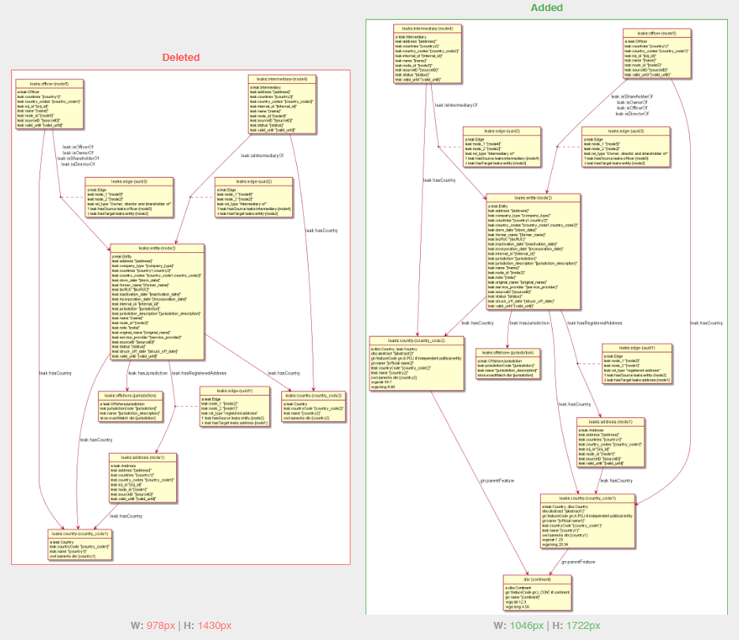
4 Next Steps
Perl hackers wanted:
- Publish on Github
- Modularize better
- Package and publish on CPAN
- Intgrate in Emacs org-mode: write turtle, see diagram
Farther future:
- Extend to visualize RDF Shapes (SHACL and SHEX)